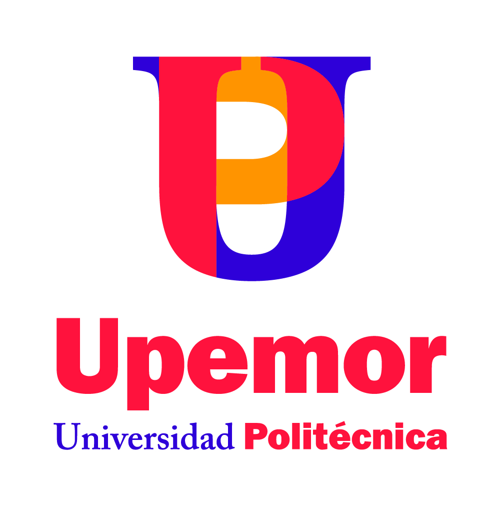

Inicio de Obra del Edificio UD4
Publicado por: Rectoría el

Proceso de nuestra comunidad universitaria. Consultar los requisitos, fechas de examen e inscripciones para el próximo ciclo académico.
Más informaciónPublicado por: Rectoría el
Conoce nuestras facultades y programas academicos de grdo y posgrado